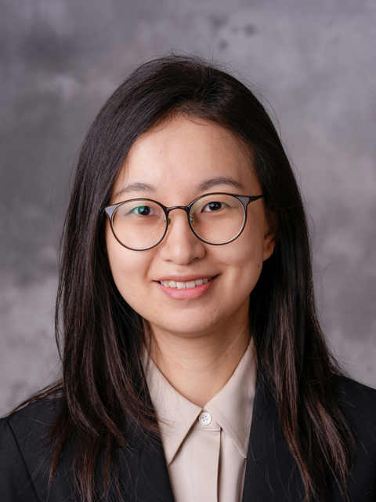

|
 |
Xiaoxuan Yang
Assistant Professor
Charles L. Brown Department of Electrical and Computer Engineering
University of Virginia
Google Scholar
UVA Profile
Curriculum Vitae
Email: xiaoxuan@virginia.edu
Address: Thorton Hall E212, 351 McCormick Rd, Charlottesville, VA
Name Pronunciation: Shao-shew-ehn(Xiaoxuan) Yahng(Yang)
|
Highlights
Biography
Xiaoxuan Yang is an Assistant Professor in the Electrical and Computer Engineering Department at the University of Virginia. She was a Visiting Postdoctoral Scholar in the Robust Systems Group at Stanford University, hosted by Dr. Subhasish Mitra. She received her Ph.D. degree in Electrical and Computer Engineering at Duke University under the supervision of Dr. Hai Helen Li and Dr. Yiran Chen. She received the B.S. degree in Electrical Engineering from Tsinghua University and the M.S. degree in Electrical Engineering from the University of California, Los Angeles (UCLA). Her research interests include emerging nonvolatile memory technologies, robustness and reliability enhancement in processing-in-memory designs, and hardware accelerators for emerging applications.
Xiaoxuan's research work won Third Place of ACM Student Research Competition SRC at International Conference on Computer-Aided Design (ICCAD) and Best Research Award at ACM SIGDA Ph.D. Forum at Design Automation Conference (DAC). She is also selected as a Rising Star in EECS, an NSF iREDEFINE Fellow, and a Rising Scholars Postdoc Fellow.
|